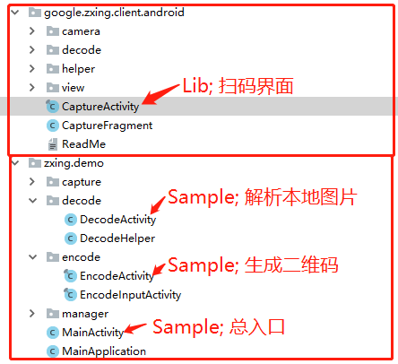

1，参考
Google官方demo
Zxing的aar地址
Zxing扫描集成与优化
Zxing扫描，横屏改竖屏
ZxingDemo地址
2，集成与简化
1) 下载并运行：从github上clone代码到本地，运行。如果崩溃，检查相机权限
2) 简化代码
删除工程中SP保存数据的代码，直接使用常量替代
删除【result目录和share目录中】二次处理扫描结果的部分
删除部分无用的Activity、冗余的资源文件
新建入口Activity，再跳转至扫描界面，提供缓冲；并方便增加解码和识别图片的直接入口
CameraManager弄成单例，首次调用时初始化；方便后期解耦
3) 最终简化结果样例
ZxingDemo地址

3，源码介绍
1) Lib模块
camera: 调用摄像头预览，并得到byte[]
decode: 将byte[]解析出来，并回调到UI层
view: 预览界面
helper: 实现附加功能[生成二维码、解析图片二维码、日志统一管理、闪光灯和声音管理]
2) 二维码和条形码
二维码使用：BarcodeFormat.QR_CODE、BarcodeFormat.DATA_MATRIX
一维码使用：BarcodeFormat.CODE_128【支付宝付款码、微信付款码使用此类型】
|
编号 |
简介 |
| 二维码 |
BarcodeFormat.QR_CODE |
普通二维码 |
| BarcodeFormat.DATA_MATRIX |
矩阵式二维码 |
| BarcodeFormat.AZTEC |
高容量二维码 |
| BarcodeFormat.PDF_417 |
堆叠式二维码 |
| BarcodeFormat.MAXICODE |
多功能条码 |
| 一维码 |
BarcodeFormat.UPC_A |
定长码，只能表示13位数字 |
| BarcodeFormat.UPC_E |
短码，总长度位8个字码 |
| BarcodeFormat.EAN_13 |
欧洲商品条形码，总长度为13位 |
| BarcodeFormat.EAN_8 |
欧洲商品码，总长度为8位 |
| BarcodeFormat.CODABAR |
过时，不推荐使用 |
| BarcodeFormat.CODE_39 |
长度不限制，简单方便实用，能够对0-9，A-Z，+-*/%$进行编码 |
| BarcodeFormat.CODE_93 |
128px，维基百科找不到相应链接 |
| BarcodeFormat.CODE_128 |
维基百科找不到相应链接 |
| BarcodeFormat.ITF |
非零售包装的水平，交错2/5码 |
| BarcodeFormat.RSS_14 |
GS1的的 DataBar 的前身缩减码 |
3) Camera和Display的横竖方向
CameraConfigurationManager.initFromCameraParameters()，中打印了相关信息
4) Camera和Display的窗口大小
UI展示Rect: CameraManager.getFramingRect()
预览解析Rect: CameraManager.getFramingRectInPreview()
4，解决的问题
2) 识别大图片时，识别失败，存在OOM问题
public static Bitmap loadBitmap(String sourcePath, int scale) {
BitmapFactory.Options options = new BitmapFactory.Options();
options.inJustDecodeBounds = false;
options.inSampleSize = scale; // 直接减小采样率
options.inPreferredConfig = Bitmap.Config.ALPHA_8; // 降低单个像素的内存大小
return BitmapFactory.decodeFile(sourcePath, options);
}
3) 扫描界面，首次进入黑屏
@Override
public void onCreate(Bundle savedInstanceState) {
super.onCreate(savedInstanceState);
...
mCaptureFragment = new CaptureFragment(); // 具体实现扫码界面的控件
mCaptureFragment.setOnResultCallback(this);
// 若无权限，则请求权限
boolean isRequestPermission = PermissionUtil.request(this, PermissionUtil.REQUEST_CODE_PERMISSION, Manifest.permission.CAMERA);
if (!isRequestPermission) {
getFragmentManager().beginTransaction().add(R.id.capture_frame, mCaptureFragment).commit();
}
}
@Override
public void onRequestPermissionsResult(int requestCode, @NonNull String[] permissions, @NonNull int[] grantResults) {
super.onRequestPermissionsResult(requestCode, permissions, grantResults);
boolean isPermissionGranted = PermissionUtil.isPermissionGranted(grantResults);
if (isPermissionGranted) {
getFragmentManager().beginTransaction().add(R.id.capture_frame, mCaptureFragment).commit();
} else {
SDKManager.toast("未授予权限，扫描功能不能使用");
finish();
}
}